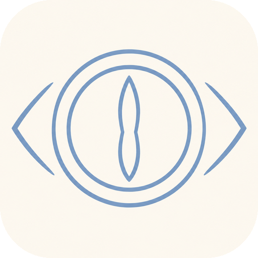
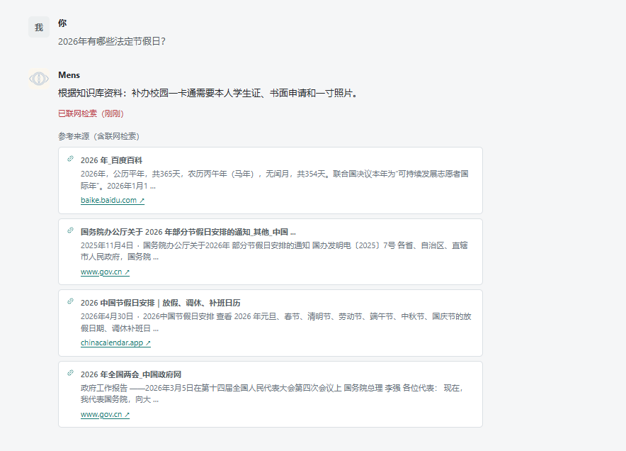
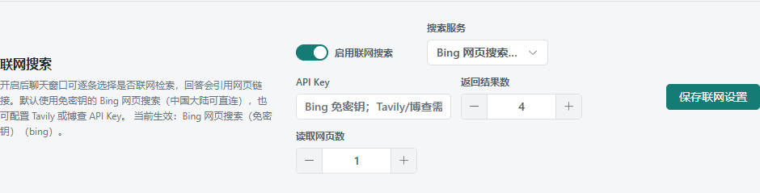
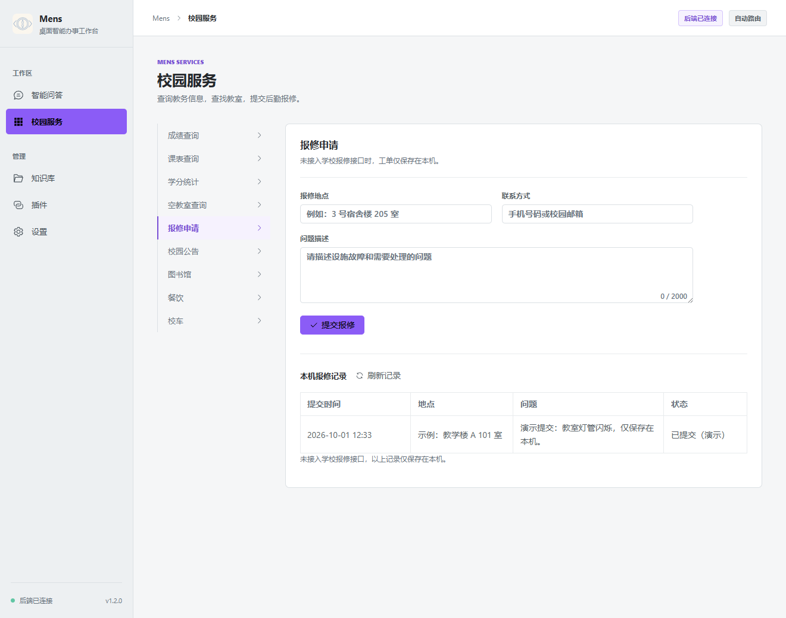

Mens 校园助手MENS CAMPUS ASSISTANT名字取自拉丁语 mēns（属格 mentis），意为「心智、理性、思维」，与英文单词 men 无关。
Mens 是一个面向院校场景的问答工作台：知识库文档（PDF / Markdown / TXT / Word）在本机检索， 校园服务（成绩、课表、学分、空教室、报修）通过可配置的 HTTPS 接口接入， 聊天支持流式回答、可停止生成、历史会话隔离，并可按需开启联网搜索引用网页来源。 文档、数据和密钥都留在本机，模型可接 Qwen3 / DeepSeek 云端 API，也可用 Ollama 跑本地模型。
拖动旋转 · 滚轮缩放
以下功能均已在开发副本中实现并有验证记录（含安装后的真机验收），具体证据见仓库中的 VERIFICATION.md。
逐字输出，随时可中断。中断时已生成的内容会连同“已停止”标记保存，历史记录不会伪造完整答案；回答可标注“演示数据”，不会假装已接入学校系统。
桌面版按本机配置、网页版按浏览器分别隔离；可恢复任意会话、单条删除或一键清空。历史面板显示每条会话的标题与时间。
支持 PDF、Markdown、TXT 与 Word (.docx)（单个 ≤5 MB）。文档数据库是权威数据源，索引用版本哈希校验，删除或更新后不会返回过期分段。
默认使用本地关键词检索，无需额外依赖；启用 RAG 后使用 BGE-M3 + Chroma 做语义检索，向量不可用时自动降级并在界面上如实提示。
按每条消息开启。默认免密钥的 Bing 网页搜索（中国大陆可直连），也可配置 Tavily 或博查；会抓取前 1–3 个网页正文，回答引用链接与检索时间。未启用时应用完全不发起检索。
九类校园 HTTPS JSON 接口可配置（成绩、课表、学分、空教室、报修等），支持结果路径与 Bearer 令牌；报修提交后本机保留记录便于核对。
Qwen3 / DeepSeek 走各自 API Key（地址必须 HTTPS）；本地模型由 Ollama 提供，内置模型目录支持断点续传、SHA-256 校验与导入重试。
一键导出包含知识库、会话、模型与校园接口配置的 zip（SQLite 用 VACUUM INTO 生成一致性快照，附各文件 SHA-256 清单），换机或重装后可完整恢复。
安装包内置 Python 运行时，无需另装 Python / Node / 数据库。窗口大小与位置会记住，设置页可查看后端日志与打开数据目录。
浅色 / 深色 / 跟随系统，自定义主题色，界面按对比度自动推导文字颜色；侧栏与移动端布局分别适配。
内置 OpenAlex 学术检索、Crossref 文献查询与百度百科词条跳转；插件必须使用白名单内的 HTTPS 主机，且只能返回 JSON。
管理员配置 HTTPS 清单后可在设置页检查新版本并打开下载页；构建脚本会校验桌面、前端、后端三处版本号一致，且所有测试通过才产出安装包。
截图为真实运行界面（开发副本，浅色主题）。



“已验收”指在对应系统上真实安装、启动并完成界面检查；“CI 构建”指由 GitHub Actions 生成产物但尚未真机运行。
| 平台 | 状态 | 交付物与说明 |
|---|---|---|
| Windows 10/11 x64 | 已构建并验收 | NSIS 安装包，用户级安装（%LOCALAPPDATA%\Programs\Mens），数据在 %APPDATA%\CampusAgent |
| macOS 12+（Intel / Apple silicon） | CI 构建，未真机验收 | dmg + zip；未签名、未公证，首次打开需右键“打开”或在系统设置中允许 |
| Linux x64 | CI 构建，未真机验收 | AppImage（免安装）与 deb；数据在 ~/.config/CampusAgent |
| Android / iOS | 不提供原生应用 | 使用可安装网页版（PWA）：手机浏览器打开部署好的站点 → 添加到主屏幕；推理由服务端完成 |
Windows 安装包开箱即用；其他平台从源码构建，或使用网页版。
Windows：下载 Release 中的 Mens-Setup-<版本>-x64.exe，双击安装，从开始菜单或桌面启动。
从源码构建（三个平台同一脚本）：
python scripts/build_desktop.py
python scripts/build_desktop.py --os mac --arch arm64
python scripts/build_desktop.py --os linux --arch x64从源码开发运行：
python scripts/install.py
start-backend.cmd
start-frontend.cmd手机 / 平板：部署后端（见仓库 README 的服务器部署小节），手机浏览器打开站点后“添加到主屏幕”，即可获得全屏、独立图标的类应用体验。
Vue 3 + TypeScript + Vite + Element Plus + Pinia 前端；FastAPI + SQLAlchemy + LangGraph 后端；Electron 外壳内置 PyInstaller 冻结的 CPython；SQLite 单文件数据库（可选 PostgreSQL）。
后端只监听 127.0.0.1 的随机端口，使用一次性令牌；桌面外壳注入额外请求头，外部页面无法拿到这些接口。
插件、联网搜索与更新检查只允许 HTTPS、固定到校验过的公网地址（保留 SNI，防 DNS 重绑定）、禁止跳转、有大小与超时上限；解析到内网地址直接拒绝。
Windows 用 DPAPI 加密保存 API Key；macOS / Linux 无等价系统接口，改为 0600 权限的明文文件（同一用户可读）。这一点在 PLATFORMS.md 中明确写出。
Mens 校园助手以 Apache License 2.0（Apache-2.0）发布，完整文本见仓库根目录的 LICENSE。
自由使用、修改、再分发本项目，包括商业使用、校内自行部署，以及闭源发布你的修改版；前提是保留版权、许可证与 NOTICE 声明，并在修改过的文件中注明改动。
分发时必须随附 LICENSE 与 NOTICE 文件、保留全部版权与许可声明、并标注你修改过的文件；本许可证不授予项目名称或商标的使用权。
软件按“现状”提供，不附带任何明示或默示担保。校园生产部署（接口对接、数据合规、账号与权限）需由使用方自行验收并承担责任。
安装包内含 Electron、Chromium、CPython、FastAPI、Vue、Element Plus 等组件，各自按原许可证分发；完整清单见仓库中的 THIRD-PARTY-NOTICES.md。
以下内容尚未验证或尚未实现，如实列出。